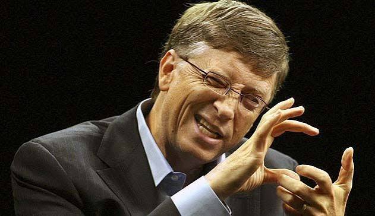

BREAKING
Local Study Finds Humans Have Canine Teeth, Scientists "Speechless"
Researchers at a research-adjacent facility confirmed Tuesday that human beings are, biologically, still equipped with pointed teeth "clearly meant for something," according to a dentist who was not available for follow-up questions because it was lunch.
ACTUALLY REAL
Bill Gates Says Rich Countries Should Switch to 100% Synthetic Beef
In a 2021 interview promoting his climate book, Bill Gates said: "I do think all rich countries should move to 100% synthetic beef." He's also personally invested in Beyond Meat and Impossible Foods. We didn't write this one. He said it.

Our Platform
- Plank 1: A chicken wing in every hand, and a napkin within reach, but not too close.
- Plank 2: The abolition of "Meatless Monday" and its replacement with "Meat Monday," "Meat Tuesday," and, on a trial basis, "Meat Also Monday Again."
- Plank 3: Mandatory labeling of all salads as "side dishes," regardless of portion size or the confidence with which they are served.
- Plank 4: Another national holiday. We haven't picked one. We just want a holiday.
Peer-Reviewed(ish) Research
"A controlled cookout trial found that participants served a properly rested ribeye interrupted each other 41% less than the control group served a grain bowl." Institute of Applied Carnivory, Journal of Shared Plates (peer review: three uncles and a grill)
"89% of kale has never been the reason anyone stayed for seconds." We Love Meat Research Desk
"Anatomists at the Steak Consensus Project confirm human canines are load-bearing, not decorative. Look in the mirror, then look at a cucumber." Journal of Obvious Teeth
Voices of the Movement
"I used to feel guilty about burgers. Now I just feel full, which is a real upgrade." Anonymous, Formerly Conflicted
"They said meat was the problem. I said the problem was that I didn't have enough of it. We were both partially right." Anonymous, Recently Enlightened
"I tried a plant-based burger once. I have chosen not to discuss it further." Anonymous, Traumatized
The Case for Meat
Nutritional Completeness
Meat supplies all nine essential amino acids at high quality (DIAAS 100+, versus under 75 for most plant proteins). Heme iron absorbs at 15–35%, versus 2–20% for plant iron; zinc follows the same pattern. B12 doesn't occur naturally in any plant food, full stop. Meat is also the only real dietary source of taurine, carnosine, and creatine.
Built By Evolution
Hominins were eating meat and marrow by 2.6 million years ago, a shift tied to shorter guts and bigger brains. Human digestive enzymes, gut shape, and saliva still point to an omnivore, not a herbivore. Protein also drives stronger satiety-hormone response (GLP-1, PYY) than carbs, though whether that reliably means eating less overall is still genuinely debated.
What the Land Actually Allows
Much of the world's land is grassland or terrain too rocky, arid, or steep to farm, but fine for grazing. Cattle turn that inedible biomass into food no crop could grow there instead. Regenerative grazing may add soil and water benefits on top of that, though the scale of those claims is still contested.
Why Vegan Diets Suck
Vegan diets require deliberate supplementation for protein quality, omega-3s, iron, zinc, iodine, calcium, vitamin D, and B12. Unsupplemented vegans show higher rates of biochemical B12 deficiency than omnivores. Also being a vegan is lame.
"But It Hurts the Animals"
Growing crops kills animals too: plowing and harvesting kill field mice, snakes, ground-nesting birds, and insects every season, and cropland eats the wild habitat they lived on. Grazing land doesn't get plowed under annually the way a grain field does, so pasture-raised meat plausibly costs fewer sentient lives per calorie than tilled monocrops, not more. That gap is really between pasture-raised and factory farming, not meat versus plants. No food system has zero animal cost.
Dominion, Not Guilt
This was settled thousands of years before anyone had a nutrition label to argue over. Genesis hands humanity dominion over every animal on Earth, then God tells Noah directly: "every moving thing that lives shall be food for you." Thomas Aquinas closed the case philosophically: animals have no rational soul, so within the natural order they exist for man to use, the same way plants exist to feed animals. The only obligation it places on anyone is to not be needlessly cruel about it, not to stop eating meat. "Meat is murder" is a slogan invented a few decades ago by people trying to override a moral framework that's had two thousand years to get it right. It hasn't earned the standing to do that.